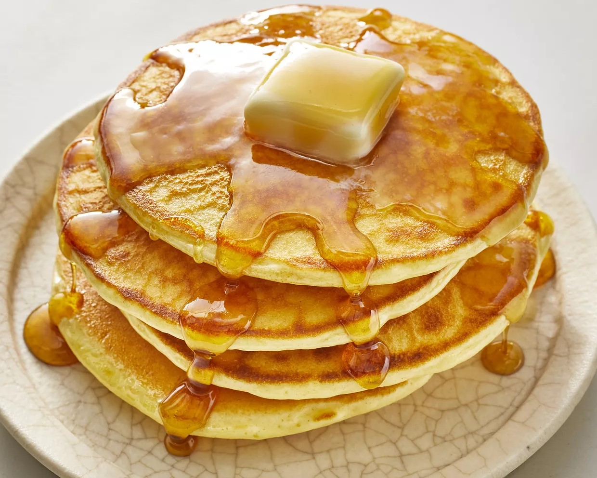
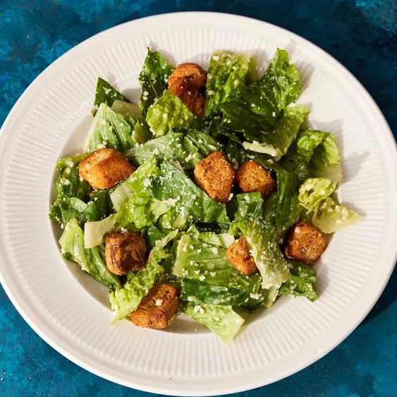

Bello's recipe book!
Contents:
- Classic Pancakes
- Caesar Salad
- Delicious Chocolate Chip Cookies Recipe
Classic Pancakes

Ingredients:
- 1 1/2 cups all-purpose flour
- 3 1/2 teaspoons baking powder
- 1 teaspoon salt
- 1 tablespoon white sugar
- 1 1/4 cups milk
- 1 egg
- 3 tablespoons melted butter
Directions:
- In a large bowl, sift together the flour, baking powder, salt, and sugar.
- In a separate bowl, whisk together the milk, egg, and melted butter.
- Pour the wet ingredients into the dry ingredients and mix until just combined.
- Heat a lightly oiled griddle or frying pan over medium-high heat.
- Pour or scoop the batter onto the griddle, using approximately 1/4 cup for each pancake.
- Cook until bubbles form on the surface, then flip and cook until browned on the other side.
- Serve the pancakes warm with your favorite toppings.
Caesar Salad

Ingredients:
- 1 head romaine lettuce, chopped
- 1/2 cup grated Parmesan cheese
- 1 cup croutons
- 1/4 cup Caesar dressing
- 1/4 teaspoon black pepper
Directions:
- In a large bowl, combine the romaine lettuce, Parmesan cheese, and croutons.
- Add the Caesar dressing and black pepper.
- Toss the salad until the ingredients are evenly coated.
- Serve the Caesar salad as a side dish or add grilled chicken for a complete meal.
Delicious Chocolate Chip Cookies Recipe

Ingredients:
- 1 cup (226g) unsalted butter, softened
- 1 cup (200g) granulated sugar
- 1 cup (220g) packed light brown sugar
- 2 large eggs
- 1 teaspoon vanilla extract
- 3 cups (375g) all-purpose flour
- 1 teaspoon baking soda
- 1/2 teaspoon salt
- 2 cups (340g) chocolate chips
Directions:
- Preheat the oven to 350°F (175°C). Line a baking sheet with parchment paper.
- In a large mixing bowl, cream together the butter, granulated sugar, and brown sugar until light and fluffy.
- Add the eggs one at a time, beating well after each addition. Stir in the vanilla extract.
- In a separate bowl, whisk together the flour, baking soda, and salt. Gradually add the dry ingredients to the butter mixture, mixing until just combined.
- Stir in the chocolate chips.
- Drop rounded tablespoonfuls of dough onto the prepared baking sheet, spacing them about 2 inches apart.
- Bake for 10-12 minutes, or until the edges are golden brown. Allow the cookies to cool on the baking sheet for a few minutes, then transfer them to a wire rack to cool completely.
- Enjoy your delicious homemade chocolate chip cookies!